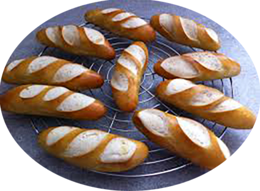

Mauricette

Pour 12 mauricettes
Préparation : 30 mn
Repos : 1h30
Cuisson : 15 mn
Ingrédients
- 500 gr de farine
- 30 gr de beurre
- 20 gr levure de boulanger
- 15 cl d’eau
- 15 cl de lait tiède
- sel
Pour le pochage
- 1 l d’eau
- 50 gr de bicarbonate de sodium
- 4 c. à café de sel
- 1 jaune d’œuf
- pavot, sésame ou carvi
Recette
- Mélangez, à l’aide d’un robot ménager muni d’un crochet et à vitesse minimum ou à la main,
la farine, le sel, l’eau, le lait et la levure émiettée
- Ajoutez le beurre tempéré et pétrir à vitesse supérieure durant 7 min.
- Laissez reposer la pâte à mauricette durant 1h à 1h30 recouvert d’un torchon humide, la pâte doit doubler de volume.
- Faites frémir dans une casserole l’eau avec le bicarbonate de sodium et le sel.
- Pendant ce temps, divisez la pâte en 12 pâtons et façonnez les mauricettes en forme de petits pains ovales..
- Plongez les mauricettes dans l’eau durant 20 secondes sur chaque face
- Disposez ensuite les mauricettes sur une plaque de cuisson recouvert de papier sulfurisé.
- Dorez les mauricettes au jaune d’œuf et saupoudrez-les de graines.
- Incisez les mauricettes dans le sens de la longueur à l’aide d’une lame de rasoir ou d’un couteau.
- Enfournez les mauricettes durant 15 mn four th.7 (210°)
Pour info
Dégustez les mauricettes dans les 2 heures suivant la cuisson afin de profiter de leur fraîcheur.
Les mauricette peuvent se congeler
|